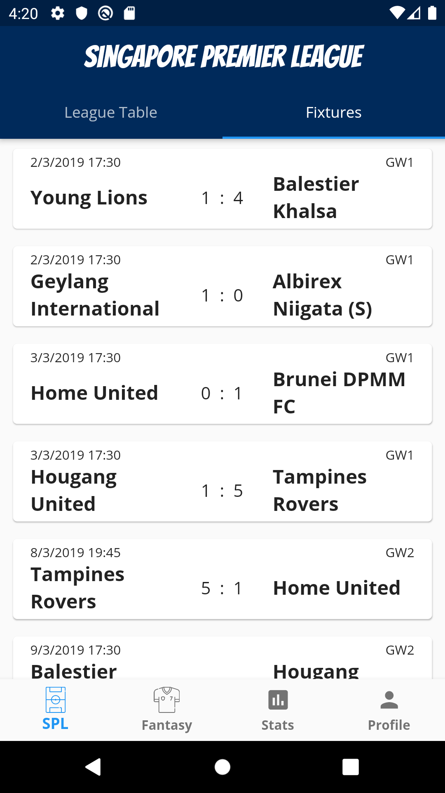

SPL Fantasy
This was my final year project (FYP) for my undergraduate degree course.
This project was conceptualised with the intention of incorporating my passion for football with my field of study.
SPL Fantasy is a fantasy football mobile app based on the Singapore Premier League (SPL).
It was developed with the hopes that the introduction of a companion / fantasy football mobile application will generate
renewed interest in the SPL from Singapore football fans.
The application has 2 main features
- Fantasy football game feature
- Create your fantasy team from the SPL
- Select sand save your starting 11 and bench
- View SPL statistics
- League table
- Fixtures
- Player statistics
2019 SPL season statistics were used in this app. These statistics were provided with the support of the Football Association of Singapore (FAS).
SPL Fantasy has received positive review from pilot test participant. I intend to further improve this project and make SPL Fantasy available to a wider audience in the near future.
Technologies:
- Flutter
- Firebase
- Firebase Auth
- Cloud Firestore
Fantasy Team Screen
Create Team Screen

Player Stats Screen

Players List Screen

League Table Screen

Fixtures Screen
